BuzzerB / Particle studies
One character.
Three transformations.
Compare three ways to turn an animated character into the CBS eye. Open a study, choose a character animation, and start its reveal. Each version has its own timeline and interaction.
01 / PLANAR

Living constellation
A colored swarm leaves BuzzerB, gathers into a crisp CBS eye, and returns to the character.
Open planar study ↗
02 / SCULPTURAL

Emblem in relief
Dense white tiles build a dimensional relief, then fuse into the precise official CBS mark.
Open sculptural study ↗
03 / VORTEX

Shape from the storm
One continuous swarm flows from BuzzerB into the precise official white CBS eye, then returns.
Open vortex study ↗